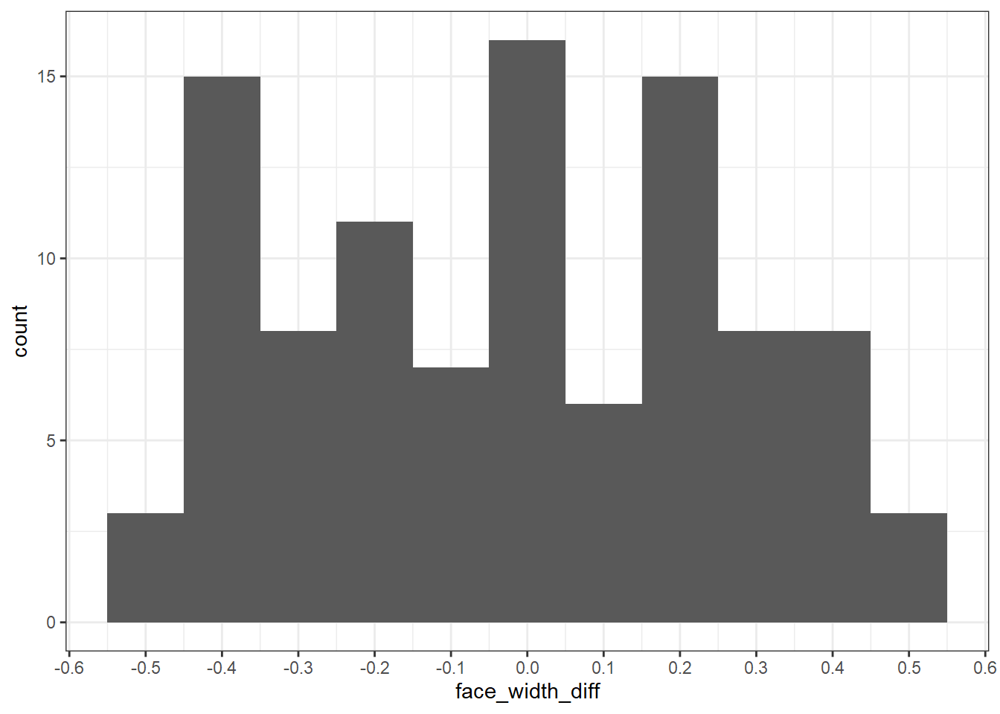

In all the previous examples, I use LexOPS to match item-wise. In this example, I show code for item-wise matching without using LexOPS. The idea is to show how item-wise matching with tolerances actually works.
As a simple example, we’ll recreate the design from 01 - Item-Wise Matching using hand-written code.
library(tidyverse)stim_pool <- read_csv("stim_pool.csv")Let’s create a list of 100 young and 100 old faces, matched on face width.
First, we define our conditions. Let’s say young faces are <28 years old, and old faces are >50 years old. We can use dplyr’s mutate() and case_when() to create our conditions.
stim_pool <- mutate(stim_pool, cond = case_when(age<28 ~ "young", age>50 ~ "old"))This gives us >1000 candidate items for each of our conditions.
count(stim_pool, cond)## # A tibble: 3 x 2
## cond n
## <chr> <int>
## 1 old 1116
## 2 young 1202
## 3 <NA> 2682The first step is to decide how closely we want to match face width. Let’s imagine that we decide to match face width within ±0.5 pixels. For reference later, we’ll store this in a vector:
tol <- c(-0.5, 0.5)Here is the code for finding 100 pairs of young and old faces matched for face width.
On each iteration, we:
We keep going until we have n_stim (100) matched pairs. To do this, we can use a while loop. Normally you would also want to add break statements to handle cases when the method fails, but I’ve left these out for now to keep the code simple.
This will give us a list of matched pairs in the form list(c("stim_42", "stim_54"), c("stim_972", "stim_43")), of length 100.
# number of stimuli we want
n_stim <- 100
# the conditions we're interested in
age_conds <- c("young", "old")
# keep track of how many matches have been found
n_found <- 0
matches <- list()
while (n_found < n_stim) {
# 1. filter the pool to exclude items already matched
iter_pool <- filter(stim_pool, !stim_id %in% unlist(matches))
# 2. pick a cond_i item at random, and get it's data
young_item <- iter_pool %>%
filter(cond == "young") %>%
slice_sample(n = 1)
# 3. filter the pool to find an item suitably close to the match null
old_item <- iter_pool %>%
filter(
cond == "old",
face_width >= young_item$face_width + tol[1],
face_width <= young_item$face_width + tol[2]
) %>%
slice_sample(n = 1)
# 4. if no suitable match, end the iteration...
if (nrow(old_item) == 0) next
# ...otherwise, record the match
matches[[length(matches) + 1]] <- c(young = young_item$stim_id, old = old_item$stim_id)
n_found <- n_found + 1
}Now we have a list of all the matched pairs, we can put this in a dataframe like so .
match_df <- map_df(1:length(matches), function(i) {
tibble(
pair_nr = i,
young = matches[[i]]["young"],
old = matches[[i]]["old"]
)
})
match_df## # A tibble: 100 x 3
## pair_nr young old
## <int> <chr> <chr>
## 1 1 face_2398 face_1490
## 2 2 face_169 face_4147
## 3 3 face_1637 face_911
## 4 4 face_1656 face_3414
## 5 5 face_2181 face_3664
## 6 6 face_4674 face_295
## 7 7 face_553 face_1295
## 8 8 face_1548 face_601
## 9 9 face_1982 face_2997
## 10 10 face_1702 face_4455
## # ... with 90 more rowsWe can add to this the face width values associated with each young and old item, and calculate the difference.
stim_pool_young <- stim_pool %>%
rename(face_width_young = face_width) %>%
select(stim_id, face_width_young)
stim_pool_old <- stim_pool %>%
rename(face_width_old = face_width) %>%
select(stim_id, face_width_old)
match_df <- match_df %>%
left_join(stim_pool_young, by=c("young" = "stim_id")) %>%
left_join(stim_pool_old, by=c("old" = "stim_id")) %>%
mutate(face_width_diff = face_width_young - face_width_old)
match_df## # A tibble: 100 x 6
## pair_nr young old face_width_young face_width_old face_width_diff
## <int> <chr> <chr> <dbl> <dbl> <dbl>
## 1 1 face_2398 face_1490 65.6 65.5 0.140
## 2 2 face_169 face_4147 59.8 60.0 -0.180
## 3 3 face_1637 face_911 63.2 63.6 -0.400
## 4 4 face_1656 face_3414 68.2 68.4 -0.190
## 5 5 face_2181 face_3664 61.6 61.8 -0.200
## 6 6 face_4674 face_295 67.4 67 0.450
## 7 7 face_553 face_1295 60.0 59.8 0.200
## 8 8 face_1548 face_601 66.5 66.9 -0.410
## 9 9 face_1982 face_2997 61.0 60.8 0.150
## 10 10 face_1702 face_4455 60.4 60.7 -0.310
## # ... with 90 more rowsHere is the distribution of differences between the young and old faces. Notice that they are between -0.5 and 0.5.
match_df %>%
ggplot(aes(face_width_diff)) +
geom_histogram(binwidth = 0.1) +
scale_x_continuous(n.breaks=10)
We can also create a plot similar to plot_design() to show the distributional similarity at the same time:
match_df %>%
select(young, old, pair_nr) %>%
pivot_longer(c(young, old), names_to="cond", values_to="stim_id") %>%
left_join(select(stim_pool, stim_id, face_width), by="stim_id") %>%
ggplot(aes(cond, face_width)) +
geom_violin() +
geom_point() +
geom_line(aes(group = pair_nr))I decided to write LexOPS because it lets you match items with readable and easily editable code, but as you can see the method is actually very simple! You could adapt the code written here to create any stimuli you could create with LexOPS, including the other examples provided.